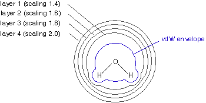

Determining Atomic Charges using the Merz-Singh-Kollman (MK) Scheme
In the Merz-Singh-Kollman (MK) scheme by U. C. Singh and P. A. Kollman
(J. Comp. Chem. 1984, 5, 129 - 145), atomic charges are fitted to reproduce the molecular
electrostatic potential (MEP) at a number of points around the molecule. As a first step of the fitting procedure,
the MEP is calculated at a number of gridpoints located on several layers around the molecule. The layers
are constructed as an overlay of van der Waals spheres around each atom. All points located inside the van der Waals
volume are discarded. Best results are achieved by sampling points not too close to the van der Waals surface
and the van der Waals radii are therefore modified through scaling factors. The smallest layer
is obtained by scaling all radii with a factor of 1.4. The default MK scheme then adds three more layers constructed
with scaling factors of 1.6, 1.8, and 2.0.

After evaluating the MEP at all valid grid points located on all four layers, atomic charges are derived that
reproduce the MEP as closely as possible. The only additional constraint in the fitting procedure is that the sum
of all atomic charges equals that of the overall charge of the system. An input file for calculating the
MK charges for water at the Becke3LYP/6-31G(d) level of theory is:
#P Becke3LYP/6-31G(d) pop=MK scf=(direct,tight)
B3LYP/6-31G(d)//B3LYP/6-31G(d) MK charges for water (C2v structure)
0 1
O1
H2 1 r2
H3 1 r2 2 a3
r2=0.96874547
a3=103.6515355
The results of the fitting procedure appear in the regular Gaussian output file as:
(Enter /scr1/g03/l602.exe)
Merz-Kollman atomic radii used.
**********************************************************************
Electrostatic Properties Using The SCF Density
**********************************************************************
Atomic Center 1 is at 0.000000 0.000000 0.119748
Atomic Center 2 is at 0.000000 0.761565 -0.478990
Atomic Center 3 is at 0.000000 -0.761565 -0.478990
289 points will be used for fitting atomic charges
Fitting point charges to eletrostatic potential
Charges from ESP fit, RMS= 0.00251 RRMS= 0.11327:
Charge= 0.00000 Dipole= 0.0000 0.0000 -2.1465 Tot= 2.1465
1
1 O -0.746390
2 H 0.373195
3 H 0.373195
Charges derived in this way don't necessarily reproduce the dipole moment of the molecule. If this latter
characteristic is desired, the fitting process can be performed under the additional constraint of reproducing
the overall molecular dipole moment:
#P Becke3LYP/6-31G(d) pop=(MK,dipole) scf=(direct,tight)
B3LYP/6-31G(d)//B3LYP/6-31G(d) MK charges for water (C2v structure)
also fitting to dipole
0 1
O1
H2 1 r2
H3 1 r2 2 a3
r2=0.96874547
a3=103.6515355
The MK charge fitting scheme can be modified in the following way in order to change/improve
its numerical accuracy:
1) Using more than four layers of points
The number of layers can be specified using the iop(6/41=N)
keyword, N being the desired number of layers. The default value for N (and smallest meaningfull
choice) is 4. The actual positioning of the layers depends on their overall number. The
first layer is always located at 1.4 times the vdW distance. The increment of the scaling factor
between subsequent layers is calculated according to the formula:
increment = 0.4/sqrt(nr. of layers)
Thus, if overall nine layers are used, the default increment of the scaling factor amounts to 0.133.
A more flexible design of the layer structure is possible by setting the increment directly using
the iop(6/43=M) keyword, M being the increment of the scaling factor
in units of 0.01.
2) Using more grid points per layer
The default density of grid points per unit area equals 1. This can be increased using the
iop(6/42=L) keyword, L being the number of grid points per unit
area. Meaningful choices for L range from 1 to 6, but a systematic dependence of the calculated
charges should not always be expected.
Details of the MK charge fitting pocedure can be dumped to the output file using the
iop(6/33=1) keyword.
Charges calculated using the MK scheme show a similarly
small dependence on the computational method employed and are thus considered superior to
Mulliken charges. The following results calculated for water in its experimental gas phase structure
(with r(O-H) = 95.72 pm and a(H-O-H) = 104.52o) illustrate this point:
| level of theory | MK | Mulliken
|
|---|
| HF/STO-3G | -0.616 | -0.366
|
| HF/3-21G | -0.873 | -0.728
|
| HF/6-31G(d) | -0.807 | -0.866
|
| HF/6-311+G(2d,2p) | -0.752 | -0.471
|
| HF/cc-pVDZ | -0.746 | -0.305
|
| HF/cc-pVTZ | -0.738 | -0.483
|
| HF/cc-pVQZ | -0.732 | -0.526
|
| Becke3LYP/cc-pVDZ | -0.694 | -0.255
|
| Becke3LYP/cc-pVTZ | -0.700 | -0.432
|
| Becke3LYP/cc-pVQZ | -0.695 | -0.487
|
While the Mulliken charges differ widely (between -0.255 and -0.866) with theoretical method
and basis set choice, the MK charges are much less variable (between -0.616 and -0.873). Moreover,
the MK charges are practically constant at either the Hartree-Fock or
Becke3LYP level of theory provided that one of the correlation consistent basis sets is being used.
Poor results are obtained even with the MK scheme with small basis sets such as STO-3G or 3-21G.
A detailed overview of the effects of the basis set and the Hamiltonian on the charge distribution
in water can be found in: F. Martin, H. Zipse, J. Comp. Chem. 2005, 26, 97 - 105.
A copy of the pdf file is available here.
last changes: 12.01.2005, HZ
questions & comments to: zipse@cup.uni-muenchen.de